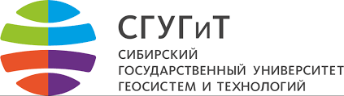
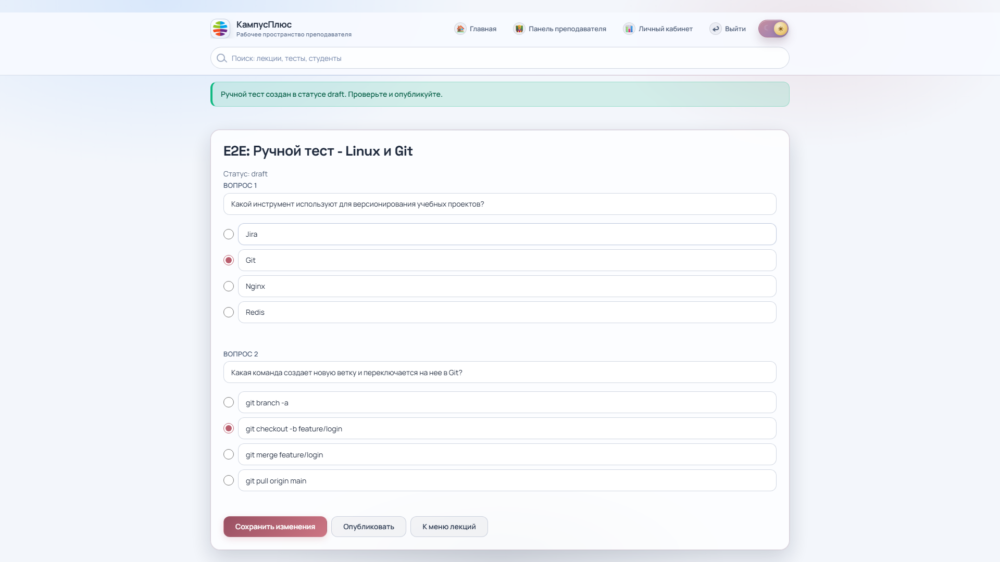
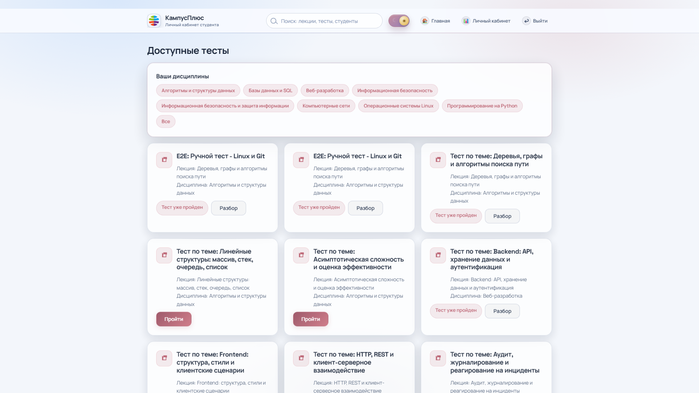
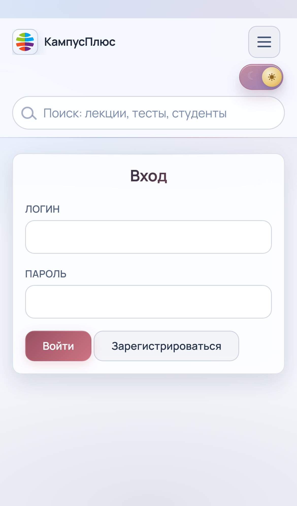

Высокие трудозатраты
Преподаватель тратит много времени на ручное создание тестов, публикацию и последующий анализ результатов.


Проект для образовательной среды СГУГиТ, который объединяет лекции, тестирование, QR-доступ и аналитику успеваемости в одном веб-сервисе.
Преподаватель создает дисциплины и тесты, публикует их по QR-коду и сразу получает картину по группе, дисциплине и каждому обучающемуся.



Преподавателю нужен точный контроль над содержанием контрольных материалов.
Автоматическая генерация убирает рутину первичной заготовки банка вопросов.
Сервис не заставляет выбирать между скоростью и качеством — доступны оба режима.



Студент быстро попадает в свой кабинет и продолжает учебный сценарий без лишних действий.
Баллы, история попыток и предметный контекст показаны в одной структуре.
Система показывает не только итог, но и направление дальнейшей подготовки.


Вход Кабинет
Кабинет Тесты
Тесты Главная
ГлавнаяИменно этот контур делает QR-модель на занятии практичной: обучающийся получает доступ к тесту сразу с мобильного устройства без дополнительной логистики и без отдельной LMS.


Каждый пользователь получает только те возможности, которые соответствуют его роли в системе.
Администратор отвечает за корректные связи между группами, преподавателями и предметами.
Даже при росте числа пользователей платформа сохраняет прозрачную и контролируемую структуру.
Платформа объединяет лекционный контент, генерацию тестов, ручной конструктор, QR-доступ, аналитику результатов и административный контур в одном прикладном веб-сервисе.